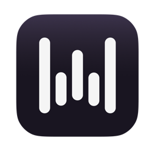

Самая мощная и современная
HR-панель среди ивент-компаний
Собственная разработка. Только мы знаем, что нам нужно, поэтому она сделана специально под процессы Структуры.
Найм сегодня
Не будущая нагрузка, а то, что реально проходит сегодня через HR-отдел.
В hh не видно
картину целиком
Кабинет hh показывает отдельные вакансии и отдельные отклики. Чтобы понять, что происходит с наймом сегодня, приходится открывать десяток вкладок и считать руками.
Панель забирает
80% рутины
80% рутины закрывает панель: массовые приглашения, переписка, предварительные интервью, запись на встречи.
- HR остаётся живое собеседование
- И решение, кого мы берём
- Панель склеивает все этапы от вакансии до найма сама, круглосуточно
Путь кандидата от вакансии до найма
Шесть этапов от пустой вакансии до вышедшего человека. Руками остаётся только собеседование, всё остальное занимает минуты.
Всё о вакансии
в одном окне
По каждой сразу видно, сколько откликов ждёт разбора, сколько просмотров и до какого числа висит публикация.
- Публикация на hh прямо отсюда
- Черновики команды общие, не привязаны к устройству
- Срок размещения и тип пакета на виду

Вакансию пишет ИИ,
а не мы вручную
Два предложения голосом, и готов текст вакансии. Панель сверяется с вакансиями конкурентов и средними зарплатами по рынку и делает нашу выгоднее.

Wispr Flowголос в текст- Сверка с рынком до написания, а не после
- Вилка ставится цифрами, без «по договорённости»

Мини-интервью
перед живой встречей
При создании вакансии отмечаем, что кандидат отвечает на вопросы сразу после отклика. Вопросы панель пишет под конкретную роль.
- Ответы приходят до того, как мы открыли резюме
- Видно мотивацию и адекватность ожиданий
- Слабые отсеиваются без нашего участия
Моментально приглашаем
300+ кандидатов
Ничего не открываем на hh: всё в одном окне. Слева очередь кандидатов, в центре карточка: опыт, последнее место работы, сопроводительное письмо и полное резюме.
- Ничего не открываем на hh, всё здесь
- Непрочитанные всегда сверху
- Решение по кандидату в один клик

Современные
скоринговые системы
Каждый отклик получает балл и попадает в группу: сильные, средние, слабые. 600-1000 откликов разбираем за две минуты.
- Приглашаем сразу всю группу одной кнопкой
- Порядок работы очевиден: сильные первыми
- Никто не теряется в бесконечной ленте
Панель объясняет оценку
и обучается
Под каждым баллом видно, из чего он сложился. Своя система оценки, собранная на признанных методиках подбора и настроенная под ивент-рынок.
- Критерии свои для каждой вакансии
- Дообучаем на том, кто реально дошёл до встречи

Приглашаем 600+ кандидатов
одним нажатием
Отметили группу галочками, нажали одну кнопку. Каждому подставляется его имя и персональная ссылка для записи на собеседование.
- За раз приглашаем до 1 000 человек
- У каждого своё имя и своя ссылка на запись
- Отправленное видно в общем списке
Кандидат отвечает
на наши вопросы
Ответил на приглашение, сразу получает список вопросов. Второй отбор до очной встречи, ещё до того как мы потратили час.
- Вопросы собраны заранее под нашу вакансию
- Ответы оцениваются, и мы выбираем, кого позвать
- На встречу зовём только тех, кто прошёл
«Премия Муз-ТВ, около 200 млн. Внутриком Альфа-банка, 30 млн, исполнительный и креативный продюсер: идеи, бюджет, документация»
«10 августа, вилка 280-350 net»
«Такого опыта не было, откликнулась больше на компанию»
Увеличиваем конверсию
в пришедших
Сообщение на hh теряется среди десятка других. Добавляем SMS и голосовой звонок с напоминанием, что кандидата позвали на собеседование.
- Текст свой в каждом канале, а не один на всех
- Каждый канал включается и выключается отдельно
- Звонок дожимает тех, кто не читает переписку
Страница записи
для кандидатов
HR не обзванивает сто человек, согласовывая время. Каждому уходит персональная ссылка, и кандидат записывается сам.
- Свободные окна отмечаем один раз
- Занятые слоты исчезают у остальных сразу
- Ссылка своя у каждой вакансии, со своим расписанием
Групповые интервью
на 50+ человек
Одна встреча вместо пятидесяти. Такого нет ни у кого. Панель сама собирает группу на одно время и следит за наполняемостью.
- Групповое интервью настраивается на любую вакансию
- Кандидат видит только свободные места
- Явка идёт в нашу скоринговую систему, и она обучается
Персональная страница
встречи у каждого
Кандидат получает подробную схему: карта, фотографии территории, сторожки и шлагбаума. У каждой вакансии своя ссылка, со своим временем и адресом, всё настраивается в панели.
- Меньше опозданий и звонков «я не могу найти»
- Работает с телефона, ничего скачивать не надо
- Там же кнопка перенести встречу

Календарь встреч
на день и на неделю
Кто, когда и на какую вакансию. Групповые интервью, слоты, отметка «пришёл» и «не пришёл» в один тап.
- Список на день готов к печати
- Одной кнопкой напоминаем тем, кого позвали, но кто ещё не принял приглашение
- Явка попадает в аналитику автоматически
Шпаргалка к каждому
разговору
Панель заранее готовит вопросы под конкретного человека: по его опыту и по слабым местам его же резюме.
- Готовится на всех, кто назначен на сегодня
- Видно, что проверить в первую очередь
- Разговор идёт по делу, а не «расскажите о себе»
Перерыв в стаже 8 месяцев в 2025 году
Вёл продажи мероприятий на 2 млн, работал с агентствами
Как считали свой процент на прошлом месте?
Готовы к переработкам и работе в выходные, когда идёт событие?
Что делали, когда клиент отказался за неделю до события?
Свой кабинет
у каждого рекрутёра
Вход по короткому паролю, и человек видит только свои вакансии, свою переписку и свой список звонков.
- Руководитель заводит людей сам, за минуту
- Каждый работает в своём кабинете и не мешает другому
- Видно, кто ведёт вакансию и кто по ней звонит
HR-директор · видит все вакансии
Руководитель департамента продаж · 4 вакансии
Рекрутёр · 3 вакансии
Готовое сообщение с паролем — отправить в мессенджер
Списки обзвона
вместо блокнота
Панель сама собирает, кому звонить: все приглашённые, кто ещё не выбрал время. Записавшиеся из списка уходят автоматически.
- Телефон под рукой, отметка о дозвоне в один клик
- Комментарий после звонка сохраняется сам
- Обзвон можно передать другому, вакансия остаётся за своим
позвонить 60 кандидатам · прозвонено 12
Инна Саргсян
+7 981 459-55-82 · позвали 10 августа
Перезвонить после 18:00, сейчас на смене
Анкета на входе
по QR-коду
Кандидат заполняет анкету сам, пока ждёт встречу: наводит камеру на код у стойки и вводит данные.
- Данные сразу в панели, не нужно переписывать с бумаги
- В расписании у пришедших появляется метка «анкета»
- В воронке видно, сколько дошло до анкеты
Исполнительный директор · 18:04
Event-менеджер · 18:01
Распечатать и положить на стойку
Пришли 12 → анкету заполнили 9
Сквозная аналитика
от просмотра до выхода
Весь путь виден целиком: просмотры вакансии, отклики, приглашения, записи, дошедшие и вышедшие на работу. Видна конверсия на каждом этапе, и понятно, какой шаг усиливать.
- Сквозная аналитика по каждой вакансии
- Конверсия на каждом этапе
- Слабый этап виден сразу, и понятно, где усилить
Находим и вакансию,
и человека за секунду
Одно поле ищет сразу по двум базам: по названиям вакансий и по кандидатам, которые уже откликались. Отвечает мгновенно, без похода на hh.
- Ищет по имени кандидата и по его должности
- По вакансии сразу видно, сколько ждёт разбора
- Из результата попадаем прямо в нужную карточку

Все переписки
в одном окне
Диалоги по всем вакансиям в одном списке. Видно, кто ждёт дольше всех, можно показать только неотвеченные и открыть историю разговора целиком.
- Ответ прямо из списка, без захода в вакансию
- Оттуда же: пригласить, напомнить, добавить в избранное
- И перейти в саму вакансию одним нажатием

Отвечает кандидатам,
пока мы заняты
Панель разобрала нашу живую переписку и знает частые вопросы. Отвечает с 7:00 до 23:00, как живой человек: не мгновенно, с паузой, и сложное оставляет человеку.
- Отвечаем сразу, поэтому до встречи доходит больше людей
- Ответы написаны живым языком, кандидат не чувствует робота
- Отвечает тысячам кандидатов в сутки, без очереди
14 типов вопросов,
собранных из нашей переписки
Ответы собраны из наших же диалогов с кандидатами. У каждого типа свой ответ, который можно переписать под себя.
- Список растёт вместе с практикой
- Каждый тип включается отдельно
- Видно, сколько раз сработал каждый
Говорим «мои контакты»,
и они появляются в письме
Пишем или диктуем сообщение кандидату. Сказали ключевое слово, и панель подставляет готовый кусок: ссылку на запись, адрес, контакты.
- Не нужно помнить формулировки
- Ссылки подставляются сами, искать их руками не нужно
- Работает и голосом, и текстом
Мои контакты: Анастасия, +7 926 800-74-64, hrd@vyzov-prinyat.ru
Никто не забывает
про встречу
Половина неявок это не «передумал», а «забыл». Панель напоминает сама: и записавшимся, и тем, кто ещё нет.
- Напоминание накануне и в день встречи
- Не записавшимся уходит отдельное сообщение
- Каждое напоминание видно в переписке
И всё это работает
прямо в телефоне
Разобрать отклики в такси, пригласить пятерых на светофоре, посмотреть расписание в лифте. Полноценная панель, а не урезанная версия.

Инструменты, которые работают уже сейчас
Что добавляем дальше
Панель улучшается каждую неделю: берём в работу то, что сильнее мешает на текущем найме.
HR-панель, собранная
персонально под компанию
Готовые системы делают то, что придумали за нас. Наша собрана вокруг того, как нанимаем именно мы, и меняется каждую неделю вместе с работой отдела.
Сколько это стоит
Вся её работа обходится около 3 000 рублей в месяц: сервер, разбор кандидатов ИИ и голосовой ввод.
Сколько это экономит
за год
Живой калькулятор: двигаем ползунки под свои числа и сразу видим, сколько времени и денег освобождает панель.
- Считается на ваших вакансиях, а не на средних
- Видно и часы, и деньги
- Открывается по ссылке прямо сейчас

Доступ к HR-панели
Наведите камеру телефона: панель откроется сразу, без установки и паролей.